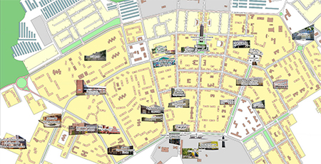
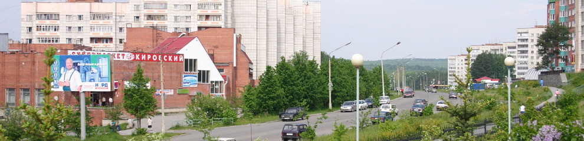

Городской округ "Город Лесной" - одно из закрытых административно-территориальных образований и составная часть единого технологического цикла ядерного комплекса страны.
Город Лесной расположен на севере Свердловской области на восточном склоне Среднего Урала, в окрестностях Шайтан-горы на берегу на берегу Нижнетуринского пруда. Его окружают живописные таежные массивы. А тесное соседство с лесом придает неповторимый облик городу, где люди живут в комфорте и гармонии с природой.
История города Лесного интересна и многообразна.
Также имеется хроника Лесного:
Для того чтобы перемещаться по карте, нажимай на объекты. Перейти на карту  